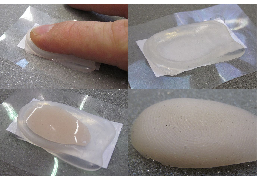
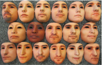

Handbook of Biometric Anti-Spoofing


Editors
Sébastien Marcel - Idiap research institute (CH) -- <marcel@idiap.ch>
Mark Nixon - University of Southampton (UK) -- <msn@ecs.soton.ac.uk>
Julian Fierrez - Universidad Autonoma de Madrid (ES) -- <julian.fierrez@uam.es>
Nicholas Evans - EURECOM (FR) -- <evans@eurecom.fr>
The first Edition of the Handbook of Biometric Anti-Spoofing (Trusted Biometrics under Spoofing Attacks) published in 2014 ( DOI 10.1007/978-1-4471-6524-8 ) was a tremendous success with more than ten thousand chapter downloads.
Biometrics is a tremendously active research field including developments in sensing technology, signal and image processing, information security, and applied machine learning, and strong links with other research areas such as forensic science, human-computer interaction, and systems engineering. In the last decade, and especially in the last few years, Presentation Attack Detection (PAD also referred to as Spoofing) has become established as an important topic in biometrics with an emphasis on the security and reliability of biometric systems. The last two years since the publication of the first edition of the Handbook of Biometric Anti-Spoofing have seen rapid developments and progress with a growing number of journal articles, conference papers, reviews and standards having appeared in the open literature, including a number of novel PAD methods.
A 2nd Edition of the Handbook of Biometric Anti-Spoofing (Presentation Attack Detection) is now planned for publication by Springer in 2018. The editorial team is soliciting new chapter contributions to the 2nd Edition from members of the biometrics, pattern recognition and machine learning research communities. Contributions from other communities which cover aspects strongly related to biometric PAD are also welcome, e.g., information security, human-computer interaction, and systems engineering.
The new edition will present the state-of-the-art in presentation attack detection for a large number of biometric characteristics:
• PAD for face (visual spectra, Near-Infrared or Thermal)
• PAD for voice (speaker recognition)
• PAD for fingerprint
• PAD for iris
• PAD for vein (finger-vein, palm-vein, …)
• PAD for gait
• PAD for handwriting biometrics
• PAD for emerging biometrics (keystroke, behavioral biometrics, EEG, ...)
Chapter contributions are expected to present novel research in sensing and processing for PAD, new PAD techniques, comparative studies, literature surveys, overviews of standardization efforts, presentation of public datasets and evaluation efforts including new evaluation metrics for PAD. Reports of significant real-world applications of PAD are also welcome.
Reproducible Research
The Handbook of Biometric Anti-Spoofing (2nd Edition) will have a focus on reproducible research (RR). All contributions containing a new experimental evaluation (as opposed to surveys of past work) are required to meet the following conditions:
-
•experiments should relate to publicly available datasets as a first requirement for RR;
-
•system scores generated with proposed PAD methods should be openly available as a second requirement for RR.
Additionally, the sharing of plots or performance figures, open source code of the proposed methods and detailed instructions to reproduce the experiments is strongly encouraged.
Timeline
-
•Call for contributions: Dec 12 2016
-
•Expression of Interest from Authors (chapter title, abstract and organisation): Feb 3rd 2017
-
•Selection of chapters: Feb 17th 2017
-
•Commitment from Authors: Feb 24th 2017
-
•Confirmed Table of Content and authors: March 17th 2017
-
•Deadline for authors: Sep 29th 2017
-
•Review: Oct-Nov 2017
-
•Final manuscript to Springer: Jan-Feb 2018
Prospective authors should express their interest by Feb 3rd 2017 with a concise chapter proposal (title, authors, abstract, organisation and action towards reproducible research if applicable) to the editorial team:
Sébastien Marcel - Idiap research institute (CH) -- <marcel@idiap.ch>
Mark Nixon - University of Southampton (UK) -- <msn@ecs.soton.ac.uk>
Julian Fierrez - Universidad Autonoma de Madrid (ES) -- <julian.fierrez@uam.es>
Nicholas Evans - EURECOM (FR) -- <evans@eurecom.fr>
Call for contributions to the Handbook of Biometric Anti-Spoofing (2nd Edition)

